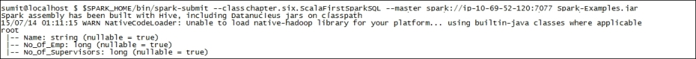
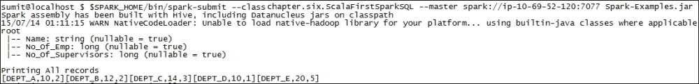
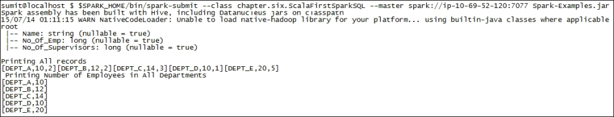
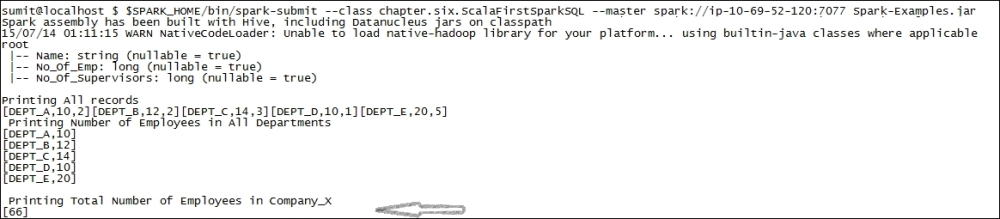
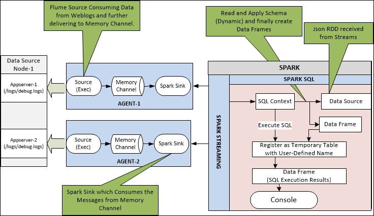
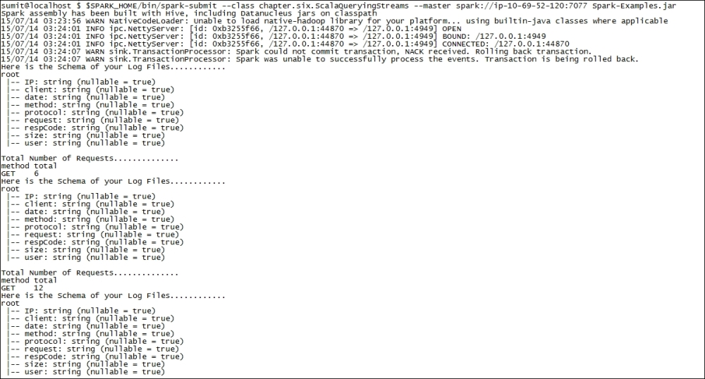

There are many such use cases where SQL on streaming data is a much needed feature, for example, in our distributed log analysis use case, we may need to combine the precomputed datasets with the streaming data for performing exploratory analysis using interactive SQL queries, which is difficult to implement only with streaming operators as they are not designed for introducing new datasets and perform ad hoc queries.
Moreover, SQL's success at expressing complex data transformations derives from the fact that it is based on a set of very powerful data processing primitives that do filtering, merging, correlation, and aggregation, which is not available in the low-level programming languages such as Java/C++ and may result in long development cycles and high maintenance costs.
Let's move forward and first understand few things about Spark SQL and then, we will also see the process of converting the existing DStreams into the structured formats.
Spark SQL is one of the modules developed over Spark framework for processing structured data, which is stored in the form of rows and columns. At a very high level, it is similar to the data residing in RDBMS in form rows and columns and then SQL queries are executed for performing analysis, but Spark SQL is much more versatile and flexible as compared to RDBMS. Spark SQL provides distributed processing of SQL queries and can be compared to frameworks like Hive, Impala, or Drill. Here are a few notable features of Spark SQL:
It is capable of loading data from a variety of data sources, such as text files, JSON, Hive, HDFS, Parquet format and of course RDBMS too, so that we can consume, join and process datasets from different and varied data sources
It supports static and dynamic schema definition for the data loaded from various sources, which helps in defining schema for known data structures/types and also for those datasets where the columns and their types are not known until runtime
It can work as a distributed query engine using thrift JDBC/ODBC server or command-line interface where end users or applications can interact with Spark SQL directly to run SQL queries
It provides integration with Spark Streaming where DStreams can be transformed into structured format and further SQL queries can be executed
It is capable of caching tables using an in-memory columnar format for faster reads and in-memory data processing
It supports Schema evolution so that new columns can be added/deleted to the existing schema and Spark SQL still maintains the compatibility between all the versions of the schema
Spark SQL defines the higher level of programming abstraction called DataFrames, which is also an extension to the existing RDD API.
DataFrames are the distributed collection of the objects in form the rows and named columns, which is similar to tables in the RDBMS, but with much richer functionality containing all the previously defined features. The DataFrame API is inspired by the concepts of DataFrames in R (http://www.r-tutor.com/r-introduction/data-frame) and Python (http://pandas.pydata.org/pandas-docs/stable/dsintro.html#dataframe).
Let's move ahead and understand how Spark SQL works with the help of an example:
As a first step, let's create sample JSON data with basic information about the company's departments such as Name, Employees, and so on and save this data into a company.json file. The JSON file would look similar to this:
Next, let's extend our Spark-Examples project and create a new package named chapter.six. Within this new package, create a new Scala object and name it ScalaFirstSparkSQL.scala.
Next, add the following import statements just below the package declaration:
Further, in your main method, add the following set of statements to create SQLContext from SparkContext:
The SQLContext class or any of its descendants, such as HiveContext for working with Hive tables or CassandraSQLContext for working with Cassandra tables, is the main entry point for accessing all the functionalities of Spark SQL. It allows the creation of DataFrames and also provides functionality to fire SQL queries over DataFrames.
Next, we will define the following code to load the JSON file (company.json) using the SQLContext class and further we will also create a data frame:
In the preceding piece of code, we are using the jsonFile(…) method for loading the JSON data. There are other utility methods defined by the SQLContext class for reading raw data from filesystem, creating DataFrames from the existing RDD, and many more.
Spark SQL supports two different methods for converting the existing RDDs into DataFrames. The first method uses reflection to infer the schema of an RDD from the given data. This approach leads to more concise code and helps in instances where we already know the schema while writing the Spark application. We have used the same approach in our example.
The second method is through a programmatic interface that allows to construct a schema and then apply it to an existing RDD and finally generate a data frame. This method is more verbose, but provides flexibility and helps in those instances where columns and datatypes are not known until the data is received at runtime.
Once DataFrame is created, we need to register the DataFrame as a temporary table within the SQL context so that we can execute the SQL queries over the registered table. Let's add the following piece of code for registering our DataFrame with our SQL context and name it company:
We are done! Our JSON data is automatically organized into the table (rows/column) and is ready to accept the SQL queries. Even the datatypes are also inferred from the type of data entered within the JSON file itself.
Now we will start executing the SQL queries on our table, but before this, let's see the schema being created/defined by the SQLContext class:
The execution of the preceding statement will provide results similar to the following screenshot:

The preceding screenshot shows the schema of the JSON data loaded by Spark SQL. Pretty simple and straightforward, isn't it? Spark SQL has automatically created our schema based on the data defined in our company.json file. It has also even defined the datatype of each of the columns.
Next, let's execute some SQL queries to see the data stored in the DataFrame, so the first SQL would be to print all the records:
The execution of the preceding statement will produce the following results on the console where the driver is executed:

Next, let's also select only few columns instead of all the records and print the same on the console:
The execution of the preceding statement will produce the following results on the console where the driver is executed:

Finally, let's do some aggregation and count the total number of employees across the departments:
In the preceding piece of code, we are using the agg(…) function and performing the sum of all the employees across the departments, where sum can be replaced by avg, max, min, or count.
The execution of the preceding statement will produce the following results on the console where driver is executed:

The preceding images shows the results of executing the aggregation on our company.json data.
As a last step, we will stop our Spark SQL context by invoking stop() function on SparkContext—sparkCtx.stop().This is required to let your application notify the master or resource manager to release all the resources allocated to the Spark job. It also ensures the graceful shutdown of the job and avoids any resource leakage that may happen otherwise. Also, as of now there can be only one Spark context active per JVM, and we need to stop() the active SparkContext before creating a new one.
In this section, we have seen the step-by-step process of using Spark SQL as a standalone program. Though we have considered the JSON files as an example, but we can also leverage Spark SQL with Cassandra (https://github.com/datastax/spark-cassandra-connector/blob/master/doc/2_loading.md), MongoDB (https://github.com/Stratio/spark-mongodb), or Elasticsearch (http://chapeau.freevariable.com/2015/04/elasticsearch-and-spark-1-dot-3.html). Let's move forward toward our next section where we will talk about integrating Spark SQL with Spark Streaming.
Integrating Spark SQL with streams
Let's continue our distributed log processing example and integrate the same with Spark SQL. We will capture the streaming data using Flume and then further perform aggregations using Spark SQL. Refer to the Data loading from distributed and varied sources section of Chapter 3, Processing Distributed Log Files in Real Time, for more details around the use case.
We will enhance our distributed log files processing use case and will leverage Spark SQL for analyzing our Apache log data received/captured with Spark streams in a particular "streaming window". We will first convert our log files into a structured format (DataFrames) and then execute the SQL queries over the structured data for counting the number of distinct type of requests received in a window and finally printing the same on console. Performing data analysis with SQL queries is always preferred because firstly, it provides easy to use functions for aggregations, filtering, merging, and correlation, which is missing in low-level languages such as C or Java; secondly, SQL is easy to learn, adaptable, and widely accepted for performing data analysis as compared to any other programming language.
Here is the overall architecture of our distributed log processing use case after we have integrated Spark Streaming with Spark SQL:

Now that we have implemented Spark Streaming, let's move ahead and perform the following steps for integrating Spark SQL with Spark Streaming:
Extend the Spark-Examples project and create a Scala object (ScalaQueryingStreams.scala in package chapter.six).
Next, add the following import statements just below the package declaration:
Download the utility JAR file for converting streams into JSON file from http://central.maven.org/maven2/com/googlecode/json-simple/json-simple/1.1.1/json-simple-1.1.1.jar. Save it at $SPARK_HOME/lib/json-simple-1.1.1.jar and also add it in your project classpath.
Next, edit chapter.four.ScalaLogAnalyzer and define a new method, tansformLogDataIntoJSON(…). This new method will parse and convert the streaming data into JSON string:
Next, edit ScalaQueryingStreams and add the following piece of code:
We are done! Our Spark streams are converted into Spark SQL DataFrames and we have also written the SQL queries for querying the data.
Now let's move forward and perform the following steps for executing the preceding piece of code:
Edit $SPARK_HOME/conf/spark-defaults.conf and append the value of the spark.driver.extraClassPath and spark.executor.extraClassPath parameters with the location of your JSON jar file, that is, $SPARK_HOME/lib/json-simple-1.1.1.jar.
Assuming your Spark cluster is down, let's bring up our Spark cluster by performing the following steps:
Bring up our Spark master by executing the following command on your Linux Console:
Next, bring up our Spark worker by executing the following command on your Linux console:
Execute the following command to bring up our Flume agent:
Compile and export our Spark-Examples project and create a JAR file named Spark-Examples.jar.
Execute the following command to simulate the log generation in real time from the folder where our Spark-Examples.jar file is saved:
Our Spark environment is ready. Next, we will move forward and execute our Spark job for consuming events and transform them into DataFrames.
Execute the following command on Linux console for executing our Spark job:
As soon as we execute the preceding command, the logs would be consumed and we would get the results on the console that would look similar to the following screenshot:

The preceding screenshot shows the Schema of our log data captured in each stream of events and at the same time, it also prints the total number of unique request being served by the web server from which the log files are analyzed.
In this section, we have discussed about the integration of Spark streams with Spark SQL. We captured the streaming log data and converted them into Spark SQL DataFrames and then further executed the queries for getting the distinct requests.
Let's move forward and see the integration of Spark Streaming with Spark GraphX.

{kind=link}